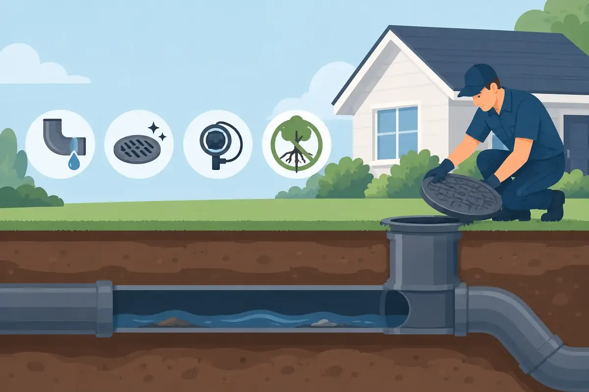

A sewer backup can turn an ordinary day into a cleanup emergency fast. One toilet begins to gurgle, a tub fills with dirty water, or a floor drain overflows - and suddenly your home, belongings, and peace of mind are at risk. Knowing how to prevent sewer backups gives Middle Tennessee homeowners and property managers a practical way to protect the people and places they care for.
The good news is that many backups develop slowly. Grease builds up, roots enter aging pipe, or items that should never be flushed collect in a drain line. A few smart habits, paired with timely professional maintenance, can greatly reduce the chance of wastewater coming back into your property.
Understand What Causes a Sewer Backup
Your home's main sewer line carries wastewater from toilets, sinks, showers, appliances, and floor drains to the public sewer or septic system. When that line becomes blocked or damaged, water cannot move where it should. It looks for the lowest available exit point instead, which is often a basement, garage, first-floor shower, or floor drain.
In many Middle Tennessee homes, the most common problems are grease accumulation, wipes and hygiene products, tree-root intrusion, and aging or shifting sewer pipes. Heavy rain can also overwhelm municipal sewer systems in some areas. If the public main is the issue, several nearby properties may experience trouble at once. If the blockage is in your private lateral line - the pipe between the building and the public connection - the responsibility commonly falls to the property owner.
The cause matters because the right prevention plan depends on it. A household with mature trees near an older sewer line may need periodic camera inspections. A restaurant, office building, or busy family home may benefit most from stronger drain-use rules and scheduled cleaning.
How to Prevent Sewer Backups at Home
Prevention starts with what goes down the drain. Toilets are designed for human waste and toilet paper, not as a disposal system for household products. Kitchen drains need the same care. Hot water may make grease look harmless as it goes down, but the grease cools, clings to the pipe walls, and gradually narrows the passage.
Keep these items out of toilets and drains:
- “Flushable” wipes, baby wipes, paper towels, and facial tissues
- Feminine hygiene products, cotton swabs, floss, and diapers
- Cooking oil, grease, fats, coffee grounds, and food scraps
- Paint, chemicals, medications, and cat litter
Collect cooled cooking grease in a container and place it in the trash. Use sink strainers to catch food particles, hair, and other debris before they enter the plumbing. If you use a garbage disposal, treat it as a convenience for small leftover particles, not a substitute for scraping plates into the trash.
For landlords and commercial property operators, clear instructions make a real difference. A simple posted reminder in restrooms and break areas can prevent a costly service call. Businesses with food preparation should also make sure grease-management practices match the demands of their operation.
Be Careful With Chemical Drain Cleaners
Store-bought chemical drain cleaners can be tempting when a sink slows down. They may offer a temporary improvement, but they do not remove tree roots, repair a broken pipe, or solve a main sewer obstruction. Repeated use can also be hard on certain pipes, seals, and fixtures.
A plunger may be appropriate for a minor, isolated toilet clog. When multiple fixtures drain slowly or water rises in an unexpected location, stop using water and call a plumbing professional. Continuing to flush, shower, run the dishwasher, or do laundry can send more wastewater into an already blocked line.
Pay Attention to Early Warning Signs
Sewer backups rarely arrive without clues. The earlier you notice a warning sign, the better the chance of clearing the problem before wastewater reaches your floor.
Watch for toilets that bubble when a sink or washing machine drains, slow drainage in more than one fixture, sewage odors near drains or outdoors, and water backing up into a tub or shower when a toilet is flushed. A floor drain that is wet or smells unpleasant may also deserve attention, especially after running appliances that discharge a large amount of water.
One slow bathroom sink could simply be hair or soap buildup in that fixture's drain. Several slow drains throughout the building point more strongly toward a main-line issue. That distinction can save time, but it is still wise to have a trained plumber identify the source rather than guess.
Schedule a Sewer Camera Inspection When It Makes Sense
A sewer camera inspection is one of the clearest ways to see what is happening inside a drain line without unnecessary digging. A technician guides a specialized camera through the pipe to locate roots, grease buildup, cracks, bellies, separated joints, or foreign objects.
Camera inspections are especially helpful when you are buying an older home, have recurring drain problems, notice large trees near the sewer route, or have experienced a previous backup. They are also useful after major landscaping, construction, or pipe repair. You receive information based on the actual condition of your line, not a one-size-fits-all recommendation.
There is a trade-off: not every home needs a camera inspection every year. If your system is newer, draining well, and has no history of trouble, regular observation and good drain habits may be enough. But recurring clogs should not be treated as normal. They are often the early signal of a restriction that will grow worse.
Manage Tree Roots Before They Take Over
Tree roots naturally seek moisture, and even a small crack or loose joint in an older sewer pipe can attract them. Once inside, roots can catch paper and waste, creating a blockage that gets worse over time. Root cutting can restore flow, but it does not permanently repair a damaged line.
If a camera inspection shows root intrusion, the best next step depends on the pipe material, the extent of damage, and the condition of the surrounding property. Periodic root removal may be a reasonable maintenance option for some lines. In other cases, repairing or replacing the damaged section offers a more dependable long-term answer. A qualified plumber can explain the options and pricing clearly before work begins.
Protect the Lowest Drains in Your Property
Homes with basements, low-level bathrooms, or floor drains face added risk because wastewater often appears there first. A properly selected backwater valve can help prevent sewage from flowing backward into a building when the public sewer is overloaded. It is not right for every plumbing layout, and it needs access and maintenance to work correctly, but it can be a valuable layer of protection in the right situation.
Keep floor drains accessible. Avoid storing boxes, furniture, or valuables directly over them. If you have a finished basement, consider keeping important documents and irreplaceable belongings off the floor or in waterproof storage. These measures do not prevent a blockage, but they can reduce damage if an unexpected event occurs.
Commercial properties should also know where their cleanouts are located and keep them reachable. A buried, blocked, or hidden cleanout can delay diagnosis when time matters most.
What to Do If a Backup Starts
If sewage begins backing up, stop using water throughout the property immediately. Do not flush toilets, run faucets, operate the washing machine, or use the dishwasher. Keep children and pets away from the affected area, since sewage can contain harmful bacteria.
If it is safe to do so, move dry belongings away from the area without entering contaminated water. Avoid trying to clear a main-line backup with chemicals or by repeatedly plunging fixtures. Contact a plumbing professional for prompt diagnosis and clearing, then address any cleanup and restoration needs. If you suspect a public sewer issue, your local utility may also need to be notified.
For homeowners and businesses across Middle Tennessee, Angle Stop Plumbing provides respectful, professional help for sewer and drain concerns, including urgent situations. A clear diagnosis and upfront explanation can replace guesswork with a practical plan for your property.
A sewer line is easy to forget when everything is working well. Treat it with a little care now - proper drain habits, attention to warning signs, and maintenance when your system calls for it - and you can protect your home or business from one of plumbing's most disruptive emergencies.